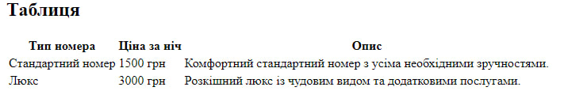

Опис предметного середовища
Тема: Створення веб-сайту для готелю "Комфорт"
Мета проєкту:
Створити зручний спосіб перегляду та бронювання номерів і доступних послуг готелю. До функціоналу входить:
Сценарій використання сайту для клієнтів:
- Клієнт потрапляє на головну сторінку готелю через інтернет, де може ознайомитися з інформацією про готель (опис, фото, послуги). На головній сторінці є можливість обрати дати перебування та кількість гостей. Після вибору дати та кількості гостей, клієнт бачить перелік доступних номерів. Він може переглянути фото номерів, короткий опис і ціну. Клієнт вибирає номер і переходить на сторінку бронювання, де вказує свої особисті дані (ім'я та номер телефону). Після цього клієнт підтверджує бронювання. На останній сторінці відображається підтвердження бронювання з детальною інформацією про номер та дати перебування.
Тема: Структура HTML-документа. Вибір предметної галузі. робота з посиланнями, таблицями, зображеннями, списками в html-документі.
Мета: придбати практичні навички роботи з HTML-документом, таблицями, зображеннями, посиланнями, списками, формами Створити шаблон звітного HTML-документом для відображення результатів роботи всіх лабораторних робіт.
Посилання на живу веб-сторінку Посилання на веб-сторінкуПосилання на живу сторінку звітного HTML документа Посилання на сторінку звітного HTML документа
Посилання на живу сторінку з самостійними роботами Посилання на сторінку з самостійними роботами
Додаткова інформація про ціль.
СТРУКТУРА ДОКУМЕНТА
<!DOCTYPE html>
<html lang="uk">
<head>
<meta charset="UTF-8">
<meta name="viewport" content="width=device-width, initial-scale=1.0">
<title>Головна сторінка готелю</title>
</head>
<body>
<main>
<section>
<h2>Зображення</h2>
<img src="hotel.jpg" alt="Зображення готелю" width="600" height="400">
</section>
<section>
<h2>Таблиця</h2>
<table>
<tr>
<th>Тип номера</th>
<th>Ціна за ніч</th>
<th>Опис</th>
</tr>
<tr>
<td>Стандартний номер</td>
<td>1500 грн</td>
<td>Комфортний стандартний номер з усіма необхідними зручностями.</td>
</tr>
<tr>
<td>Люкс</td>
<td>3000 грн</td>
<td>Розкішний люкс із чудовим видом та додатковими послугами.</td>
</tr>
</table>
</section>
<section>
<h2>Списки (нумеровані, маркіровані)</h2>
<h3>Переваги нашого готелю</h3>
<ul>
<li>Сучасні зручності</li>
<li>Цілодобове обслуговування</li>
<li>Безкоштовний Wi-Fi</li>
</ul>
<h3>Як забронювати номер</h3>
<ol>
<li>Оберіть тип номера</li>
<li>Заповніть форму бронювання</li>
<li>Очікуйте підтвердження</li>
</ol>
</section>
</main>
</body>
</html>HTML-код таблиці
<table>
<tr>
<th>Тип номера</th>
<th>Ціна за ніч</th>
<th>Опис</th>
</tr>
<tr>
<td>Стандартний номер</td>
<td>1500 грн</td>
<td>Комфортний стандартний номер з усіма необхідними зручностями.</td>
</tr>
<tr>
<td>Люкс</td>
<td>3000 грн</td>
<td>Розкішний люкс із чудовим видом та додатковими послугами.</td>
</tr>
</table>
Скріншот таблиці
Теорія про теги та атрибути, що застосовуються при створенні таблиць
Таблиці в HTML використовуються для організації даних у рядках і стовпцях. Основні теги для створення таблиць:
- <table>: Цей тег визначає саму таблицю.
- <tr>: Тег рядка таблиці. Використовується для створення нових рядків.
- <th>: Тег заголовка стовпця. Використовується для створення заголовків у таблиці. Заголовки за замовчуванням жирні і вирівняні по центру.
- <td>: Тег комірки таблиці. Використовується для заповнення даними комірок таблиці.
- Атрибути:
- colspan: Визначає кількість стовпців, які повинні бути об'єднані в одній комірці.
- rowspan: Визначає кількість рядків, які повинні бути об'єднані в одній комірці.
- border: Визначає товщину рамки таблиці.
- cellpadding: Визначає внутрішній відступ у комірках таблиці.
- cellspacing: Визначає відстань між комірками таблиці.
Приклад створення таблиці з об'єднанням комірок:
<table border="1">
<tr>
<th colspan="2">Тип номера</th>
</tr>
<tr>
<td rowspan="2">Стандартний номер</td>
<td>1500 грн</td>
</tr>
<tr>
<td>Комфортний стандартний номер</td>
</tr>
</table>
HTML-код зображення
<section>
<h2>Зображення</h2>
<img src="hotel.jpg" alt="Зображення готелю" width="600" height="400">
</section>
Скріншот зображення

Теорія про атрибути тегу <img>
Тег <img> використовується для вставки зображень на веб-сторінку. Основні атрибути, що використовуються з цим тегом:
- src: Визначає шлях до зображення. Це обов'язковий атрибут.
- alt: Описує зображення. Використовується для доступності (наприклад, для користувачів з обмеженими можливостями) і з'являється, якщо зображення не може бути завантажене. Це обов'язковий атрибут.
- width: Визначає ширину зображення в пікселях або у відсотках. Може бути використаний для масштабування зображення.
- height: Визначає висоту зображення в пікселях або у відсотках. Може бути використаний для масштабування зображення.
- title: Показує підказку, яка з'являється, коли курсор миші наводиться на зображення.
Приклад використання атрибутів:
<img src="example.jpg" alt="Приклад зображення" width="300" height="200" title="Це приклад зображення">
HTML-код списків
<section>
<h2>Списки (нумеровані, маркіровані)</h2>
<h3>Переваги нашого готелю</h3>
<ul>
<li>Сучасні зручності</li>
<li>Цілодобове обслуговування</li>
<li>Безкоштовний Wi-Fi</li>
</ul>
<h3>Як забронювати номер</h3>
<ol>
<li>Оберіть тип номера</li>
<li>Заповніть форму бронювання</li>
<li>Очікуйте підтвердження</li>
</ol>
</section>
Скріншот списків

Теорія про теги та атрибути списків
HTML підтримує два основні типи списків:
- Маркіровані списки (<ul>): використовуються для списків без порядкових номерів. Кожен елемент позначається тегом <li> і відображається з маркером за замовчуванням.
- Нумеровані списки (<ol>): використовуються для упорядкованих списків з номерами. Кожен елемент також позначається тегом <li>, а елементи автоматично нумеруються.
Основні атрибути списків:
- type: атрибут для <ol>, який дозволяє змінювати тип нумерації (наприклад, "1" для числового, "A" для алфавітного).
- start: для <ol> встановлює початковий номер нумерації.
- reversed: атрибут для <ol>, який дозволяє показувати нумерацію в зворотному порядку.
Висновок
У ході виконання лабораторної роботи було досягнуто поставленої мети — набуття практичних навичок роботи з HTML-документом, таблицями, зображеннями, посиланнями, списками та формами. Було створено шаблон звітного HTML-документа, призначений для відображення результатів усіх лабораторних робіт, що стане основою для подальшої демонстрації здобутих знань.
Вивчення основної структури HTML-документа дало змогу зрозуміти, як налаштовувати базові елементи, такі як заголовок, метадані, секції контенту та футер. Окрім цього, було закріплено знання щодо роботи з основними тегами, такими як <table>, <img>, <a>, <ul>, <ol>, <li> та <form>, а також вивчено їхні атрибути. Це дозволяє створювати більш структуровані та інформативні веб-сторінки, що відповідають сучасним вимогам.
Таким чином, виконання цієї лабораторної роботи дало необхідну базу для подальшого вдосконалення навичок веб-розробки та заклало основи для створення складніших веб-інтерфейсів, що мають привабливий вигляд та зручну навігацію для користувачів.
Лабораторна робота 1.2
Опис предметного середовища
Опис для лабораторної роботи 1.2...